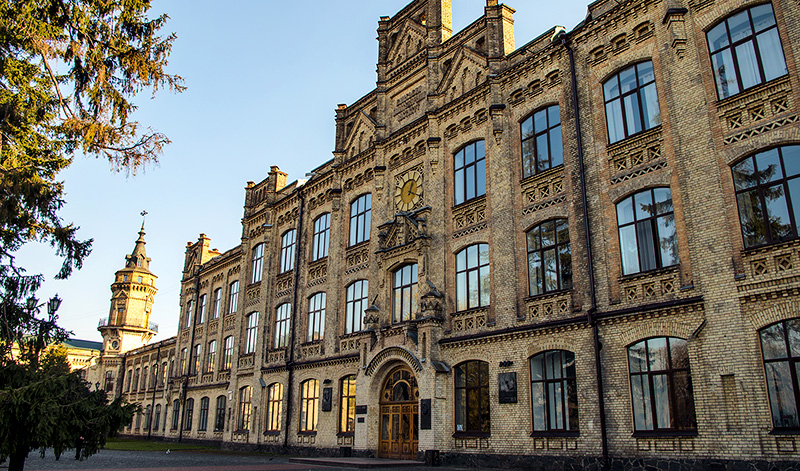

Націона́льний техні́чний університе́т Украї́ни «Ки́ївський політехні́чний інститу́т і́мені І́горя Сіко́рського» — заклад вищої освіти інженерного профілю, заснований в Києві у 1898 р., на сьогодні це один із найбільших університетів України за кількістю студентів з широким спектром спеціальностей і освітніх програм для підготовки фахівців з технічних і гуманітарних наук. З 2009 до 2014 року мав статус автономного дослідницького університету. За рейтингами ВНЗ входить в трійку найкращих в Україні.